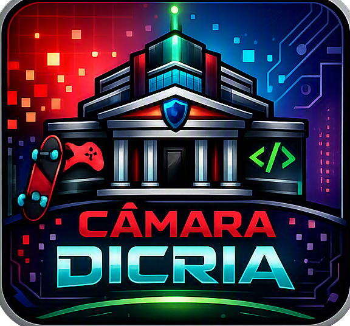

Sobre a Câmara Dicria
A Câmara Dicria nasceu para unir tecnologia, negócios e diversão. Nosso foco é apoiar empreendedores, desenvolvedores e gamers locais, promovendo inovação e comunidade.

A Câmara Dicria nasceu para unir tecnologia, negócios e diversão. Nosso foco é apoiar empreendedores, desenvolvedores e gamers locais, promovendo inovação e comunidade.